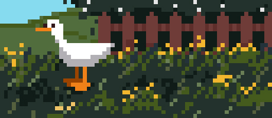

Real-time geolocation game / service, anonymous.
Although, it is rather a platform. For many of things.
For the organization of protest.

Place ducks on the map and write something inside.
Download app to find out what the others have written, but only if you are near the duck.
iOS
and
Android
Close